01｜SkyRL框架架构与397B办公Agent实战
00:00:01阮世麟 · 主讲人大家好，我叫阮世林，一般用英文名 Charlie。我现在是伯克利的二年级博士生，也是 SkyRL 项目的 core contributor。SkyRL 是伯克利与 AnySkill 公司联合开发的开源后训练框架；AnySkill 是 RAG 框架背后的公司。很高兴青客今天邀请我来做这场分享。我平时较少用中文做技术报告，中间会夹杂较多英文，敬请谅解。
00:00:34阮世麟 · 主讲人本次分享分为两部分：第一部分介绍 SkyRL 框架的架构、近期发展和 roadmap；第二部分将讲解一个 397B Office Work Agent 的实战经验——这是与数据公司 Mercore 合作的项目，在 397B 模型上训练面向投行、咨询、法律等领域的办公工作 Agent，功能类似 GDP。我会逐步说明：当我拿到 SFT 数据、拥有一个 SFT 框架后，具体该做哪些事？肯定不是一上来就用一百多张 GPU 去训练，而是需要循序渐进地低开销验证。
00:01:12阮世麟 · 主讲人整体时长约 40–50 分钟，每部分约 20–25 分钟，最后留出 Q&A 时间。第一部分的 agenda 如下：首先介绍 SkyRL 是什么；然后看已有用户案例；接着分析 2026 年 PO 需求发生了哪些变化；再梳理在大规模 post-training 中，从 SFT 到 RL 到 inference training 等环节的关键挑战；最后介绍我们的 roadmap。第一节：SkyRL 是什么？它是一个模块化的 LLM post-training 库，专为 agentic 场景做了优化，主要有四个特点。
00:02:01阮世麟 · 主讲人第一是 async-think：异步训练是第一公民，不应是事后追加的功能。第二是高性能的大规模训练与 serving：训练端支持 FSDP、DDP、TP、PP、CP、EP 等多种并行策略；推理侧支持 LLM 推理与测试用例管理。第三是模块化设计：用户可直接接入自定义 environment，复用已有 harness；我们主要基于 Harbor 框架管理 rollout 的全生命周期。
00:02:34阮世麟 · 主讲人第四是 Tinker API 兼容性，并支持 multi-stage 训练。SkyRL 于 2025 年 6 月发布。过去一年中，已有一百多位 contributor 和 collaborator，覆盖学术界与工业界。
00:02:58阮世麟 · 主讲人左侧是一些典型用户公司：DataDog（可观测性）、Lila（AI for Science）、Google；也有不少数据公司，如 Scale AI、AfterQuery、Core；还有提供 post-training as a service 或持续学习服务的公司，如 Trajectory；以及偏学术界的合作方，如 UMich、Carnegie Mellon 等。
00:03:29阮世麟 · 主讲人第二部分看两个深度用户：Lila Science 和 Trajectory。Lila Science 是一家面向科学领域的 AI 公司，最新估值约 80 亿美元。其核心方向是 scientific reasoning 模型，例如通过回训模型实现 quantum synthesis——具体细节我不完全确定，但属于前沿科学领域。
00:04:03阮世麟 · 主讲人然后他们把整个 workload 都标准化在了这个框架上，主要有两类深度用户。第一类是大规模 S 模型，目前 focus 在 100B 左右的模型，训练数据量达几十亿 token，当前运行在五百多张 H100 上。S 之后是 Agent-ASTHINK-2L，它更多面向 life science 领域的 To-Use 任务，属于 long-horizon、需要深度思考的类型。第二类深度用户叫取筛选 AI，近期涌现了很多 Post-training-as-a-Service 公司：例如一家企业正在使用 Cloud 提供的闭源模型，但成本很高。
00:04:46阮世麟 · 主讲人那么，如何在自身产品上，随着用户增长，自主 post-train 一个模型，持续提升自有模型能力？这就是所谓的 'on-your-intelligence'。这类需求催生了一批 RL-as-a-Service 或 Post-training-as-a-Service 公司，其中 JTory 可能是第二或第三大的公司。他们最初是做 Continual Learning 平台的。
00:05:16阮世麟 · 主讲人他们一开始使用 Thinking Machine 公司的 Tinker 服务——一款 hosted 训练产品。后来发现成本较高，于是采购了大量自有 GPU，希望复用原有训练脚本：此前在 Tinker 托管 GPU 上训练，现在想迁移到自有 GPU 上运行。为此，他们大规模采用 scale-out 版本的 Tinker Engine 进行实验，目前已运行了一万多个 experiment。
00:05:47阮世麟 · 主讲人这些实验部署在一百多张 H200/B300 上，每天 rollout 约 100 亿个 token，并已尝试过二十多个模型。他们的典型流程是：内部有一套 trajectory CI 系统；用户提交训练请求后，系统既可在自有 GPU 上运行，也可调用托管的 Tinker 服务。他们与 Tinker 是紧密合作者，Tinker API 上的 Mullaa 就是双方联合开发的。
00:06:23阮世麟 · 主讲人还有更多用户场景可快速过一下：DataDo 是做 Site Reliability Agent 的，例如当云服务宕机时，让 agent 逐层分析 log，定位故障原因；他们自去年 9 月起一直使用该框架至今。Echo 是 Microsoft Research 的一篇论文，传统 RL 中通常会将 environment 的 token mask 掉；而该工作在 GPU loss 上额外加入一个 cross-entropy loss 作为 auxiliary loss，从而训练 world model，使模型能预测 environment 将给出的 feedback。此外还有一些 ALA 和 ON 的用户。
00:06:54阮世麟 · 主讲人然后他这里是在 g pu 的 loss 上加了一个这个 cross entropy loss 的这个 auxililoss，这样子就可以训这个 word model，让模型来去 predict 这个 environment 会给什么样的 feedback。然后还有一些别的和 ala 和 on 的一些用户。对 ok 那现在是现在可能可以过一下这个2026年 po 的需求的变化，然后也是下一个 walk through 的一个铺垫。那2026年啊 posttra 的这个需求大概是长什么样的？
00:07:30阮世麟 · 主讲人可能大概有两块：第一个是更加 large scale 的模型。去年在实验室或与工业界合作时，大家更多训练比较小的模型，比如芭比（BLOOM）或 32B 级别；那时还不太敢投入大量 GPU 和资金去训练大模型。但今年模型规模显著增大，已达 200B 甚至 3T；context 长度也持续增长；‘think’ 已基本成为默认选择。其次，右侧是 customized early 中的 workload，其多样性更高，API 也在标准化——例如我们的 Tinker API；agent harness 也越来越复杂，去年可能还只是一个较基础的 ReAct-style agent。
00:08:18阮世麟 · 主讲人现在大家可能更希望在 code 上，比如开源的 OpenCode 上开展工作；后续的 walkthrough 也将围绕这两条主线展开。接下来是 SkyRL 上大规模 post-training 的 walkthrough，我们会顺着 pipeline 逐个讲解：S（supervised fine-tuning）、inference weighting，以及 training。这是一个较简单的 pipeline：先用 S，再做 fully think RL；RL 系统包含两个组件——trainer 和 generator。
00:08:58阮世麟 · 主讲人generator 内含 inference engine 和 environment；数据流大致为：generator 生成模型的 rollout，environment 返回 observation 和 reward，trainer 接收这些信号后进行训练，并通过 weight update 将新参数传给 inference engine。这是 SkyRL 的架构图——可能一年过去，该架构图基本没有变化。
00:09:31阮世麟 · 主讲人最上面是 controller，我们使用 Ray 实现该 controller，用于定义各模块如何协同工作：例如是 synchronous training、asynchronous training，还是 streaming training——这更多是一个主脚本。trainer side 可使用 Megatron 或 FSDP；generator 当前主要基于 vLLM。environment 可使用我们自带的 bespoke harness（非常简单），也可 bring your own harness；例如 Harbor 是一个较受欢迎的 harness management 或 toolbox management 库。
00:09:59阮世麟 · 主讲人环境既可以接入我们自带的简易 Harness，也支持使用已有的 Harness；例如 Harbor 这类常用于管理 Harness 或沙箱的工具。接下来先讲 SFT。虽然大家现在更多讨论 RL，SFT 仍然重要。训练小模型时，可以让大模型生成 rollout，再从中选出成功轨迹做蒸馏。
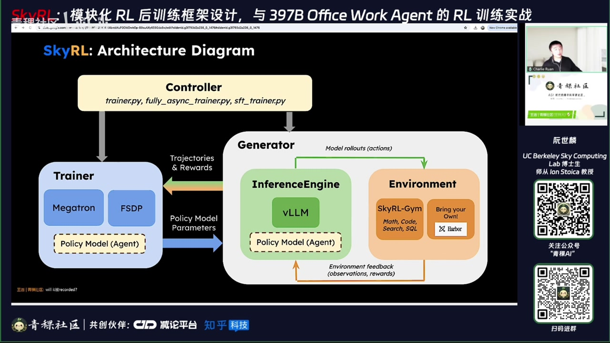
00:10:48阮世麟 · 主讲人第二种是公司若想从 training 起点开始构建能力，也会做 general-purpose training。此外也有做 RFT（rollout-based fine-tuning）的：即对同一模型大量 rollout，挑选成功样本，再做 SFT——据在 LA 的朋友反馈，这一环节正变得越来越重要。相比 RL，RFT 更静态、更可控，不像 RL 那样多个组件需同时协同运行。
00:11:22阮世麟 · 主讲人然后 Scar 有自己的 native 的 SFT trainer，SFT 和 RL 用的是同一套 stack，同样的 model parallelism FP，同样的数据格式，就不用替换框架，比较方便。右边是一个 example 的 code。最近的一些 feature 可能包括 sequence packing，以及一些 custom 的 callback。用户可以在不同的训练阶段，自己定义想要调用的 function。
00:11:54阮世麟 · 主讲人然后是 streaming 的 data loading，或者是多个数据集的混合。在规模上，拉拉有在五百多张 H100 120P 上做，可能处理几十亿 token 的大规模 SFT。接下来是 RL 这一部分，可能会把 inference、waiting 和 training 这几个模块分开来讲。首先是 inference：现在 SkyRL 的 inference 完全是基于 HTTP 的。先是一个 client，是在 Rust 中实现的 SkyRL Client，它很轻量。
00:12:26阮世麟 · 主讲人然后分两个 plane：一个是 control plane，一个是 data plane。control plane 可能涉及 weight update，或者你在做 fully think 的时候，这个 pose 和它直接打到各个 VM server 上。data plane 主要是比如你做 routing 的请求，我们会通过 VM router 来做 routing。HTTP 有很多好处，比如在标准化到 HTTP 之后，这个 API 或者 protocol pattern 可以更自然地接入。
00:13:05阮世麟 · 主讲人其中做的一些小优化，比如在 asthink-2L 的时候，load balancing 很重要。default 的比如 via the router，它会做一个叫 consistent hash 的 policy：我拿到一个 trajectory，用它的 session ID 做 hash，然后直接映射到一个 engine 上。但如果一律这么做，就很难负载均衡。一个比较简单 optimization 是：我拿到一个新的 trajectory 之后，根据当前 load 最小的 engine，决定打到哪里。
00:13:46阮世麟 · 主讲人然后在第一 turn 的时候决定之后，之后的 turn 也都继续打到这里，从而保住这个 prefix。这样一个比较简单的 optimization，在 generation tokens per second 上，左边是 naive 的 consistent hash，右边是带 load balancing 的 hash，在一个叫 Apex Agent 的 dataset 上，可以有 up to 1.4 倍的 speed up。
00:14:16阮世麟 · 主讲人然后是 we-think —— 这是 trainer 和 inference 之间的 bridge。首先我们花了很多时间和 VM 团队紧密合作。现在 we-think 的 API 是 VM 原生的：在这里是 VM 的，在 VM engine 的时候，它会有一个 we-transfer 的 config，可以 spec。右边是 trainer，可以直接用 VM 自带的一些微 think 的包去做这个。
00:14:51阮世麟 · 主讲人we-think 在之前的时候会需要写很多 worker extension 的代码。现在大部分的逻辑都是在 VM 原生的，还有 pause and resume。在之前的时候，basic RL 加上 YDP 在 VM 里面可能会有 deadlock，主要是在 update 的时候，需要在各个 DDP group 之间小心地 coordination。然后我们往 VM 上游贡献了很多 pause-resume 的 optimization。
00:15:24阮世麟 · 主讲人比如说有这个 Two-Face Po 来支持 DP+1。然后更多的细节可以在这个 blog post 里面，是 Scara 跟 VM 合作的一个 blog post。然后 PrimeLike 这个公司在 16 个 H200 节点上，在 DP=32、TP=32 的配置下，稳定地训练了这个 A-Think-5.1，验证了这么一个 fix，以及 training 的一些 update。Scara 现在支持 FP8×FP8 的训练，trainer 会用 FP8 来加速 forward/backward，然后 inference 会用 FP8 来减小模型的权重和 KV cache。
00:16:09阮世麟 · 主讲人然后这应该是在搭上面，它速度方面的：3.59B 在 8 张 H100 上可以快 19%，然后在 35B 上，在 8 张 B200 上可以快 20%，训练速度和 BF16 基本一致。然后 FP8 能稳定的一个关键是叫 on-policy weight sync：在 train 里我们会把 FP8 量化的权重连同它的 weight scale 一起同步给 inference engine，保证两边看到的是同一份权重，而不是你重新去 test。
00:16:48阮世麟 · 主讲人然后对精度比较敏感的 tensor 会保留 BF16，然后不同模型也可以定义自己的 tensor transform，细节也在一个 blog post 里——这里好像没有 link，但你应该搜一下 sc8，会有一个这样的 blog post。然后另一个 trainer 的 feature 是 R3 和 top-p replay：R3 就是在 rollout 的时候，MoE 模型会把 routing 到 expert 的这个决策记录下来，然后在 train 的时候再回放同样的 routing，这样能解决 MoE 模型的一些 mismatch。
00:17:26阮世麟 · 主讲人然后 top-p replay 是：你在 sampling 的时候，可能会用 top-p、top-k 这样的 sampling 策略，比如只看 top 95% 的 token；但这样如果 naïvely 去 train，也可能同样有 mismatch。所以我们会把这个 top-p、top-k 的结果记录下来，然后也在 train 上，在这个 top-p、top-k 的 token 集合里去算 logprob，这样也对这个 mismatch 有帮助。
00:17:56阮世麟 · 主讲人然后用 top-p、top-k 的原因是：有一个应该在 Cognition 的 Sweet-1.7 的 blog post 里有提到，用这样的 top-p replay 可以保证 entropy 不会 collapse 得那么快。这里是一个对比：横轴是 step，纵轴是 reward，橙色的是只用了 R3，紫色的是用了 R3 加上 top-p replay。然后在基本一致的 reward 前提下，top-p 的 entropy 降低得更慢。
00:18:26阮世麟 · 主讲人然后在今年的 Resum 上，Science 的 Dominic 在 training mismatch 上做了很多优化，也给了一个 talk；应该马上会有 recording release，大家感兴趣可以去看。OK，然后回到需求的这张图——刚刚大概讲了一些 large-scale RL 的一些需求，接下来是 customize the stack，重点的是 API 的 standardization。首先 Tinker API 是可能去年 10 月份的时候，Thinking Machine 发布的一个产品。
00:19:01阮世麟 · 主讲人就像推理引擎，大家都会起一个推理 server 来服务 OpenAI 的 chat completion API。训练也可以有这么一个引擎，也可以起这么一个 API，在这里叫 tinker define API，包含 forward、backward：给定要训的数据，计算梯度；optimstep：给定累积的梯度，执行权重更新；sample：即 rollout 的 sample；save state：例如做 checkpoint 等。
00:19:34阮世麟 · 主讲人然后我们当时得到了贝塔测试反馈，觉得这个 API 非常合理，于是写了名为 scartx 的 backend，它是第一个开源的 tinker backend。当时使用了 JAX，且在同一个框架、同一份模型定义下，可同时用于训练和采样。快进到今天，它已演进为一个完整的 tinker engine：我们不再使用 JAX，而是继续沿用相同的 trainer（Megatron 和 FSDP），在 RL 场景中使用该 trainer。
00:20:17阮世麟 · 主讲人现在架构大致如下：首先会启动一个 REST API server，就像 vLLM 会启动一个 API server 一样；我们这里提供 backoptistep、sample、save state 等接口；底层 backend 运行的是与 211 类似的 trainer，即 Megatron + FSDP；inference 使用 vLLM；最上层是用户的 script，可以是 tinker cookbook——即 tinker product 中提供的示例脚本。
00:20:49阮世麟 · 主讲人对，同样的 script 既可以运行在 tinker 自己的 product 上，也可以运行在自建的 scro 搭建的 tinker API server 上。基于该 tinker API，我们可以实现 multi-tenant：例如 vLLM 可以服务多个用户的请求；同理，tinker API server 也可服务多个 RL experiment 或多个 experiment。
00:21:19阮世麟 · 主讲人其中，训练端必须有一个 adapter store 的管理模块，用于管理各个 LoRA 的训练状态。因此它本质上是一种 time-sharing：例如先训这个 LoRA，再训那个 LoRA，再训下一个。主要原因是训练本身已是 compute-bound，没有太强必要真正 batch 起来并行训练；但在 vLLM 这边会做 batch，因为它更偏向 memory-bound，会复用 vLLM 自身的 LoRA，并让它们共享同一个 base 模型。
00:22:03阮世麟 · 主讲人那在这里是嵌后 3.54 比。这个 MoLoRA 已被 Trajectory AI 应用于 production 中做 continual learning。他们写了一篇 field note，讲述 MoLoRA 相比 single-tenant 的加速效果。当然，这里的 benchmark 可能相对朴素，用的是 JAX 38K 的一个 example。OK，然后第五个 part 是 sc 接下来的方向，包括结构上的改进，比如想做的 fusion，还有 Q3 的一些 romap。
02｜双入口设计与 Harbor 环境管理
00:22:37阮世麟 · 主讲人首先今天的话，SkyRA 会有两个 entry point：一个是刚刚提到的 Tinker 的 cookbook，即用户已经在用 Tinker 这样的产品时写的一些脚本；另一个是 Sky 自己的 entry point。这个 entry point 不只是 trainer 的入口，front end 除了 training 和 inference 以外，一个 framework 可能还会包含很多其他组件。
00:23:01阮世麟 · 主讲人比如你怎么去集成你的 harness，怎么去做 token out，或者在 fully async 的 scheduling 中如何做调度。这些其实有很多复杂的东西，是 Tinker cookbook 里不太能提供的。所以理想情况下，不应该有两个 entry point，而应该统一构建在 Tinker 的 re-server 上。也就是说，现在如果你用 Sky 的 front end 写 training script，目前只能在自己的 GPU 上运行。
00:23:41阮世麟 · 主讲人但如果我们完成这件事，你就可以在 Fireworks、Together，或基于一些 inference provider 的托管服务上运行你的 training script。除了 Infra 以外，像 Together、Base 等公司也正计划提供 training service。对一些企业用户来说，比如他们已在 9B 模型上做了某些 operation 且运行在自有 GPU 上，可能很难获取例如 32 张 GPU 或 32 个节点的资源。
00:24:13阮世麟 · 主讲人因为成本较高，若想 scale up，他们可以更灵活、弹性地选择 Fireworks 或 Base 等平台提供的 hosted training service。这就像做 inference 时，有时你在自有 GPU 上跑，有时会选用 GPU provider。这是其中一项正在推进的工作。Q3 的 roadmap 包含这些内容，也是我们当前正在做的。
00:24:47阮世麟 · 主讲人然后是功能化（Fication）：即把 ScoutTen 直接 target 到我们的 Tini；也在做 zero training，大约一个月前与 VM 合作启动了一个项目，研究如何将 M 的 training 做成 zero training match；同时也在做 batching variant 的相关调研，本质上是面向大规模 inference 的优化，比如 connector 的 PD、FO 场景下的 auto-scale inference，以及更多模型的支持。
00:25:24阮世麟 · 主讲人比如 Qwen3、GLM5.2、GLM5.3、Flash 等。此外还有 reliability 和 tolerance —— training 和 inference 两侧都需要做 fault tolerance；这里未列出但也在推进的是 token out 的 proxy。Ok，以上就是 SkyRA 这个 framework 的近期更新。第二部分的分享将聚焦于在 SkyRA 上训练一个 knowledge work agent：一个 397B 的 RL run 的 step-by-step field guide。
00:26:03阮世麟 · 主讲人对，过去夏天的时候，我在 Mercore 做过一个 part-time，主要用 SC 在 Mer 的数据上做训练。他们的目标是证明自己的数据确实优质。而本次 talk 更像一个 playbook，面向的听众可能是手头已有一些 ready 数据、拥有一个框架，但不清楚如何从数据集构建出端到端的 hill 或 benchmark 的人。你的数据可能来自 Record、SK 等 vendor，也可能是开源的，或你自己合成的。
00:26:42阮世麟 · 主讲人首先简单介绍一下 Record：它可能是美国第一或第二大数据公司。其核心是一个 expert network——这些标注人员本身也是各领域的专业从业者，例如金融、法律、咨询、医疗等。他们既能生产 RLAIF 数据，也能参与 evaluation。所谓 evaluation，例如公开案例 RMP：RMP 专注于金融类 agent 的评估。
00:27:28阮世麟 · 主讲人比如我是一家公司，想知道该选用 Opus 还是 Sonnet 就足够了。除了参考模型在通用 benchmark（如 Terminal Bench）上的表现，我更关心它们在我自己的数据、我自己的工作流中实际表现如何。但我可能没有私有的 evaluation 体系。这时就可以借助这些 expert，基于我的实际部署场景（如 TR），搭建一个 private evaluation。
00:28:06阮世麟 · 主讲人因此，同一组 expert 既可生成 RLAIF 数据，也可提供企业级 evaluation。另一个是 After Shelf Dataset，即专家在真实工作环境中标注的数据集，可直接购买。Apex 则聚焦于所谓 economically valuable work，专门针对 email 和 OTS 类任务开展 effort。本次 field guide 主要聚焦于 Apex Agent 的 benchmark。
00:28:39阮世麟 · 主讲人该 benchmark 已开源，在 Hugging Face 上可查看全部 480 个任务样例。它覆盖管理咨询、投行、法律等领域，共包含 480 个任务，分布在 33 个 world 中。什么是 world？world 是一个环境，即一个具体 scenario。例如在投行场景中，当前需完成一笔 deal（如两家公司合并），该场景下会涉及大量文件：如 DOC、Excel 或 PPT。
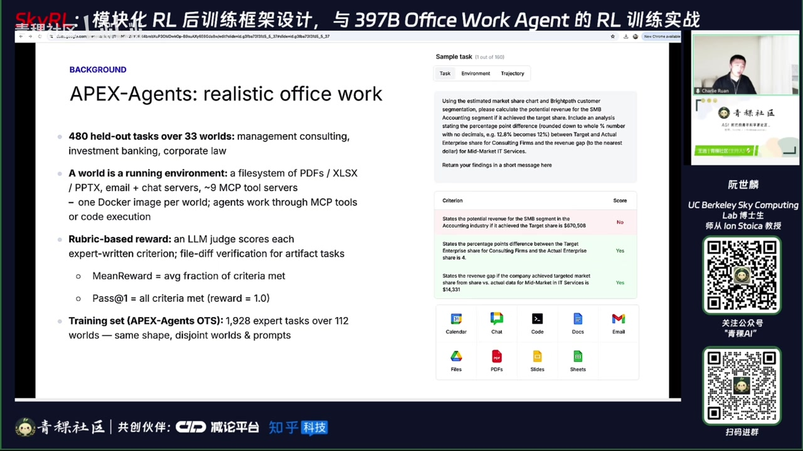
00:29:19阮世麟 · 主讲人同时，该场景还包含多种 real-world application，例如日历、Google Chat、Email 等。模型还可执行 code execution。这是一个示例任务。每个任务的 reward 是 rubric-based——由前述 expert 编写的评分标准。模型运行后，采用 LM-as-a-judge 方式逐项打分（Pass / Fail）。最终输出两个 metric：
00:29:59阮世麟 · 主讲人一个是 mean reward，即有多少百分比的 criteria 被满足；另一个是 Pass@1，即全部 criteria 均被满足的任务占比。本 field guide 使用 1900 个未公开的训练数据进行训练，覆盖 112 个场景，与公开 benchmark 具有相同结构（same shape），但 world 或 PRM 不同。 headline 结果使用了 Qwen3.6-35B 和 Qwen3.5-397B 两个模型。
00:30:49阮世麟 · 主讲人然后在 held out 的 evaluation 上，35B 模型的指标从 14% 涨到了 23.75%。我们训了三个 iteration，作为一个 35B 模型，其性能超过了 OpenAI 4.5，并且也超过了此前训练的 GM4.7 355B 模型；使用同样的 recipe，我们将模型 scale up 到 153.533B（即 397B），也取得了约 70% 的相对提升。所有的训练代码、模型权重以及 evaluation traces 都已开源。
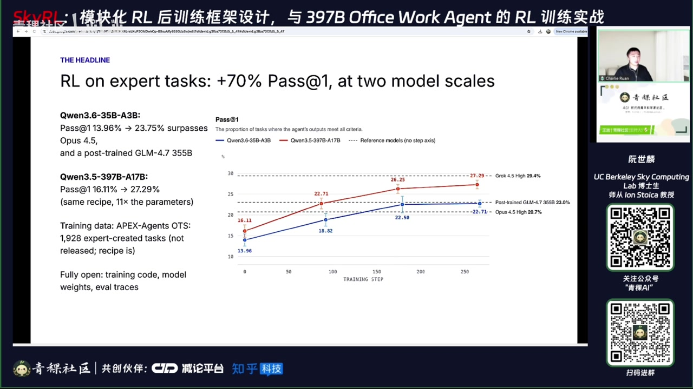
00:31:25阮世麟 · 主讲人但由于一些 license 原因，训练数据无法公开。但我们希望这些代码能帮助大家理解：除了数据和 RL 框架之外，我们还到底需要什么。这套流程会按照六个步骤展开——即我拿到数据之后，应该一步一步做哪些事情，来逐步降低风险。
00:31:51阮世麟 · 主讲人因为我不可能一上来就花 20 个 node 直接跑 RL；这里会发现，我们直到第四步才真正开始运行 RL。第一步是环境（environment）、harness，以及 token 的 bookkeeping，这一步完全不涉及 RL；但可能在整个项目中，约 30% 的精力都花在了第一步上。第二步是 RL 系统的一些清零（sanity check），仍然没有进行 RL 训练。第三步是在一小撮任务上做 overfitting，验证 reward 是否能涨。
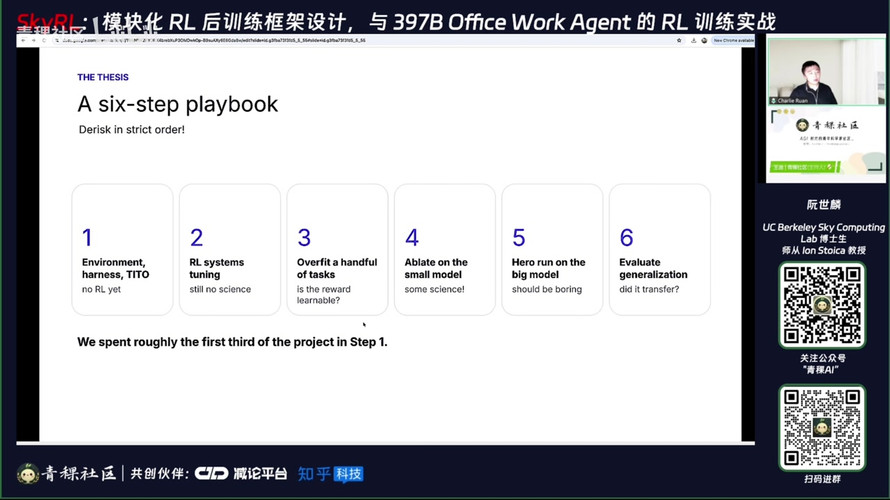
00:32:28阮世麟 · 主讲人如果你连在一小撮任务上 reward 都涨不了，就不应该在整个任务集上运行 RL。第五步——即第四步——是在一个较小的模型上做一些算法层面的 ablation 实验；最后是 hero run：将第四步得到的经验直接 scale up；最终再做 generalization 的评估。OK，第一步就是 environment、harness 和 token bookkeeping。
00:33:06阮世麟 · 主讲人在进入第一步之前，可以先大致过一下我们的 stack：我们用到的两个开源框架，一个是 SkyRL（sk），其中用到 SkyRL 的点是它的 thinking training loop；另一个是 me，它提供 training harness 和 engine，作为 backend。另外还有 Harbor，它既是一种数据格式——可能大家有听说过，它正被用于 RL environment 或 benchmark 构建，是一种标准化格式。
00:33:41阮世麟 · 主讲人Harbor 不仅是数据格式，也是 agent rollout 和 sandbox 生命周期的管理工具：比如从启动 sandbox、加载 environment、运行 agent、执行 test，到最后 tear down sandbox，包括一些 fault tolerance 机制，都可以由 Harbor 来接管。用户作为 SkyRL 用户，主要只需编写五个文件；其中 Harbor generator 是 SkyRL 用户唯一需要写的文件。
00:34:19阮世麟 · 主讲人它实现的是一个叫 GeneratorInterface 的抽象，只有一个函数需要实现：generate。这个 generate 会在 SkyRL 的 full thinking training loop 中被调用；你拿到一个 task，然后返回用于训练的 token 或 reward。这部分完全由用户定义，也是用户唯一需要写的内容。作为 SkyRL 用户，这个 generator 会调用你自己定义的 agent，在这里我们称该 agent 为 Archipelago，并复用你自己的 harness。
00:34:53阮世麟 · 主讲人它主要是一个比较简单的 loop agent，用于调用 MCP server 的 loop agent，即 ReAct agent。最后涉及各种冲突处理，比如每一步的 timeout 是多久，整个 end-to-end 的 timeout 是多久。训练规模大约是 6 到 12 个 H200 节点，用于 35B 模型的训练；最终的 hero run（397B 模型）使用 20 个节点。
00:35:25阮世麟 · 主讲人大概估算是每个训练 step 成本约 120 元，假设 GPU 单价为每小时三元。这里是一个系统架构图，展示每个组件运行在什么机器上、代码写在哪里：最左边是 Harbor 格式的数据集，每条 RL task 包含一个 instruction 字段。
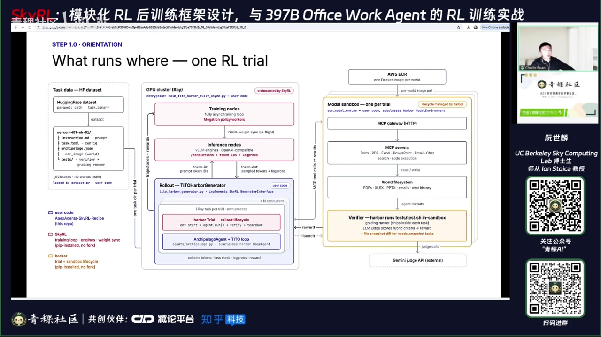
00:35:58阮世麟 · 主讲人M 是它的 basic，即 prompt 模板；然后会有一些 test 配置——即跑完之后如何执行 reward 计算，这部分逻辑放在 test folder 里。我们会使用一个 container image，该 image 存储在 AWS S3 上；而数据本身存于 Hugging Face，其中会指定所用的 image 名称，然后直接从该 image 启动 environment。
00:36:30阮世麟 · 主讲人中间是 GPU cluster，由 Ray 管理。红色框是 Sky 自带的模块，例如 training 如何工作、inference 如何工作、wait-think 如何实现；紫色框是用户需自行编写的部分，包括 Harbor generator——即给定一个 task，如何调用 Harbor 并获取最终 reward。
00:37:01阮世麟 · 主讲人红色框中的 Harbor trial 就是一个 task，即如何运行它？这应为黄色框，由 Harbor 负责。右边是我们采用的 model-3 box 架构：每个 trial 启动一个独立的 SCP server，拥有自己的文件系统；verifier 等组件均运行在该 model-3 box 内。最后 verifier 通过 Air Message Judge 进行评判，此处使用的是 Germin。整个系统大致如此。
00:37:41阮世麟 · 主讲人OK，搞清楚 what runs where 之后，我们可以开始第一步：D。第一步是让 environment 更 robust。一个基本 rule 是：在正式 RL 训练前，用 RL 预期的并发量（concurrency）做一次完整 inference sweep——我们同时运行 600 个 rollout，遍历整个训练集，仅做 inference。你希望看到非模型相关的 error 接近零，即避免在 RL 阶段因 infrastructure 问题（如 timeout、下载失败等）mask 掉 rollout，否则会造成 GPU 浪费。
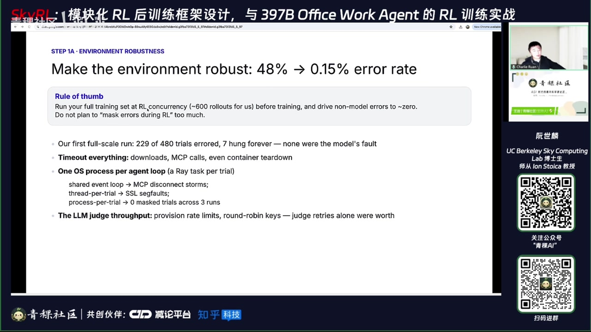
00:38:24阮世麟 · 主讲人例如我们第一次运行时，480 个 rollout 中有 229 个报错，另有 7 个长期 hang 住；但其中没有一个是模型自身能力导致的问题，主因是数据质量、environment 不稳定或各类 timeout 设置不合理。因此我们需要在每个环节都加 timeout：下载需要 timeout，MCP 调用需要 timeout，甚至 container 的 tear-down 也需要 timeout。
00:38:57阮世麟 · 主讲人他这更多的是一个像打地鼠的过程。还有一个问题是，比如你的 agent loop：你的 environment 是用 3 box，但你的 agent loop 是在 3 box 里跑，还是在 GPU 里跑？我们这里用的是 GPU cloud。一开始我们是用一个 Python process 来跑所有的 agent loop，这就带来很大问题——所有 agent loop 共享同一个 event loop，经常遇到 MCP 的 disconnect。
00:39:32阮世麟 · 主讲人因为它是一个比较 IO-heavy 的系统，一个解决方案是：每一个 rollout 或者 trial 都用一个独立的 task。还有一些比较 trivial 的问题可能会碰到，比如你的 LLM message：我现在是 600 个 rollout concurrency，那怎么保证 message 不会被截断？你可以对 key 做 rot，或者让 judge 去做 retry 等等，就是一些很繁琐的细节。
00:40:06阮世麟 · 主讲人在做 RL 之前，你可以先过一遍这个 data，把它尽可能降低冗余。同时你也可以去看：你的 PaaS@1 是多少，PaaS@4 或 PaaS@8 是多少，来评估数据到底有多少能被 RL 学到——这个 headroom 就是第一步。第一步 A：数据预处理；第一步 B：在 environment inference 稳定之后，要检查自己的 harness 是否正确。同样有个经验法则：你在数据上跑 evaluation，再让 coding agent 分析为什么某个 rollout 失败了、没拿到满分 reward。
00:40:53阮世麟 · 主讲人我们要保证失败的原因不能是因为模型能力不足以外的因素，而只能是因为模型能力本身不够；而不是因为你的 agent 或 harness 的设计别扭，甚至是一些 bug。如果不做这一步就直接做 RL，reward 可能也会涨，但模型学到的更多是怎么绕过 harness 的坑，而不是真正的能力。你确实看到 reward 在涨，但 GPU 是被 burn 在‘教模型如何绕过 harness 的别扭设计’上，中间我们确实发现了很多这类问题。
00:41:35阮世麟 · 主讲人比如我们的 PPT 工具，它永远都会 return 一个 response，尽管操作都成功了；又比如模型想要配 store，但大部分时间它都不让配 store；再比如关掉网络的情况下，需要提前在 3 box 里安装它所需的 Python package；还有读 PDF 的 tool，会把一个本应是 2D layout 的表格 collapse 成一维，导致信息损失。
00:42:06阮世麟 · 主讲人tool 的 response 有时不做 truncation，可能一下子就把整个上下文用光了。有各种各样的这类小 bug。它同样像一个打地鼠的过程，但你可以让 coding agent 一条一条去读、去发现——这些其实都是 coding agent 发现的，因为人很难逐条去摘数、去读。
00:42:44阮世麟 · 主讲人然后最后做完这个事情之后，它的 reward 直接从 23% 涨到 28%，几乎是用它做一个 one-prompt-to-one-label（1P2L）任务所带来的提升。OK。第一步的最后一步是 token-to-account，即我们需要做 token 的 bookkeeping。这可能大家听过，但可以在这里重新过一下它是什么：首先，我们永远不能把 engine 的输出重新进行 tokenization，因为 chat template 是有损的。
00:43:26阮世麟 · 主讲人比如说这里举个例子：如果我们的 vocabulary 只有四个 token，token 0 是左箭头，token 1 是 'search'，token 2 是 '←search'（左箭头加 search），token 3 是右箭头。假如 inference engine 选了 token IDs [0,1,3]，而我们只记录了对应的 string，就会记录成 'search'；等后续要 re-tokenize 它时，它可能被映射为 token 2 或 token 3。
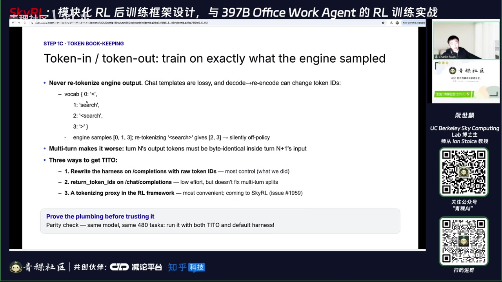
00:44:00阮世麟 · 主讲人这就导致了 token-level 的不一致：明明 sample 的是 [0,1,3]，但 trainer 却在 penalizing token 2 或 3，这就变成了 off-policy。而 multi-turn 场景会让这个问题更严重——比如第 N 轮 sample 的 token，会在第 N+1 轮被重新 re-tokenize 后喂给 inference engine，会更麻烦。有三种方式来解决这个问题：第一种是把 harness 直接重写为使用 completion API；一般 chat completion 接口返回的是 string，而 completion API 返回的是 token space，这可能是最显式、控制力最强的一条路径，也是我们实际采用的方式。
03｜Token不一致问题与RL训练稳定性
00:44:50阮世麟 · 主讲人第二种是在 chat completion 中有一个叫 return_token_ids 的参数可以指定。每一轮它会把这一轮 input token 和 model output token 都原样返回给你。好处是 low-effort，坏处是它可能无法解决 multi-turn 问题：比如第一轮你 tokenize 的 output，在第二轮重新 tokenize 时结果可能不同。
00:45:22阮世麟 · 主讲人这时候你就无法把两轮 token 序列拼成同一个 sequence 来训练；你可能需要对第一轮的 output 训练两次，因为它在不同轮次的 tokenize 方式不一致。第三种是现在很多 RL framework 都在做的做法，叫 tokenization proxy。SkyRL 现在正在实现这个机制：harness 表面调用的是 chat completion，但实际上打到我们的 proxy 上；proxy 会自己 track 之前所有轮次的 token，并基于此对本轮 response（比如 turn 2 的 response）做 consistent tokenization，再用 completion API 喂给 engine。
00:46:04阮世麟 · 主讲人OK。然后这里的 rule thumb 是：做完 token-to-account 之后，比如你做同样的任务、同样的 email，要保证原本用 chat completion 默认 harness 和你做了 token-to-account 的 harness，其 evaluation 结果应该完全一致，以此作为校验。OK。这是第一步。第二步是 RL 的一些系统性工作。第一步做完，其实已经完成了大量 heavy lifting。
00:46:39阮世麟 · 主讲人然后这里主要是两个 coding agent 的 session。比如说 call co，你直接让他跑两个晚上：第一个晚上做 training 的 knob tuning。这里有三个 feature 非常重要：第一个是带 stiffness control 的 fully think；第二个是 dynamic sampling，即跳过 reward 方差为零的任务；第三个是以 token 为单位的 dynamic micro-rolling batching。这三个 feature 在做 FO 时比较 helpful。
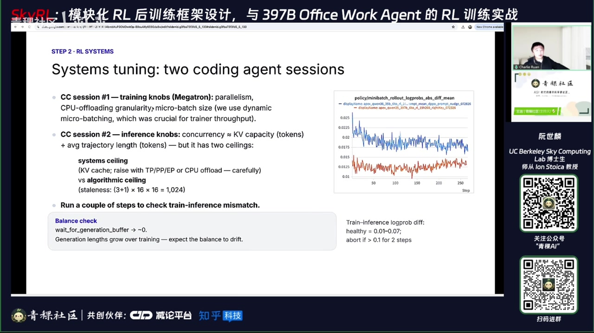
00:47:08阮世麟 · 主讲人因为如果所有 reward 都是零，PO 就没有任何可学习的东西。然后第一个晚上是调 training 的 knob，包括 micro batch 各种 parallelism（如 TP、PP），还有 CPU 相关资源配置。针对每个 micro batch，在给定 GPU 和待训模型的情况下，我大概能调多少？
00:47:47阮世麟 · 主讲人你可以让 ma 克上去，在一个比较典型的脚本上，调一个晚上去找到可能最快的 config。第二个晚上是调 inference，主要调 concurrency，即 KV cache 容量。concurrency 基本上等于 KV cache 大小除以 average trajectory 长度。但它有两个天花板：一个是 algorithm 带来的，比如我现在最多三步，一步乘上 batch size，再乘上 PO size，这就是 algorithm 带来的天花板，最多只能有 1000 个并发。
00:48:38阮世麟 · 主讲人另一个天花板是 system，即 KV cache 能支持多少 concurrent request。如果 KV cache 很小，但并发设为 1000，就可能频繁 preempt 之前的 pre-cache，导致变慢。所以基本上会用 KV cache 大小除以 trajectory length 得到一个上限。这个值会随训练变化，因为 trajectory length 会变化，因此 concurrency 也需要动态调整。
00:49:18阮世麟 · 主讲人对。最后想达到的结果是：trainer 是 main thread，你不希望 trainer 等待 generation；最好训完立刻训下一个，而 generation 已提前准备好 roll out。另外需要监控的是 training forward match，可以跑一两部或 5 到 10 部 math 这类比较 dummy 的 task。
00:49:57阮世麟 · 主讲人一般小于 0.04 是一个比较健康的状态；如果大于 0.1，肯定要排查问题。这里蓝色是 33.6B 模型，橙色是 397B 模型。在没有开 R3 的情况下，两者都是比较健康的 training forward match，所以最后我们并没有开 R3。第三步是 overfitting 的一步，直觉是：我现在有这么多 data，怎么知道 data 质量高不高，或者模型到底能不能学？
00:50:44阮世麟 · 主讲人那我想要比较快速、便宜的方式去指导它，就选比如32个task。如果我在32个task上训练，batch size也是32，每个task做8遍rollout（即8遍sample），并采用synchronous training，那么每一个step就是一个epoch。我希望模型能尽快掌握这32个task，完成过拟合。如果连这32个task都学不明白、都无法overfit，那就不应该继续burn更多GPU资源去尝试学习更大的2000个task。
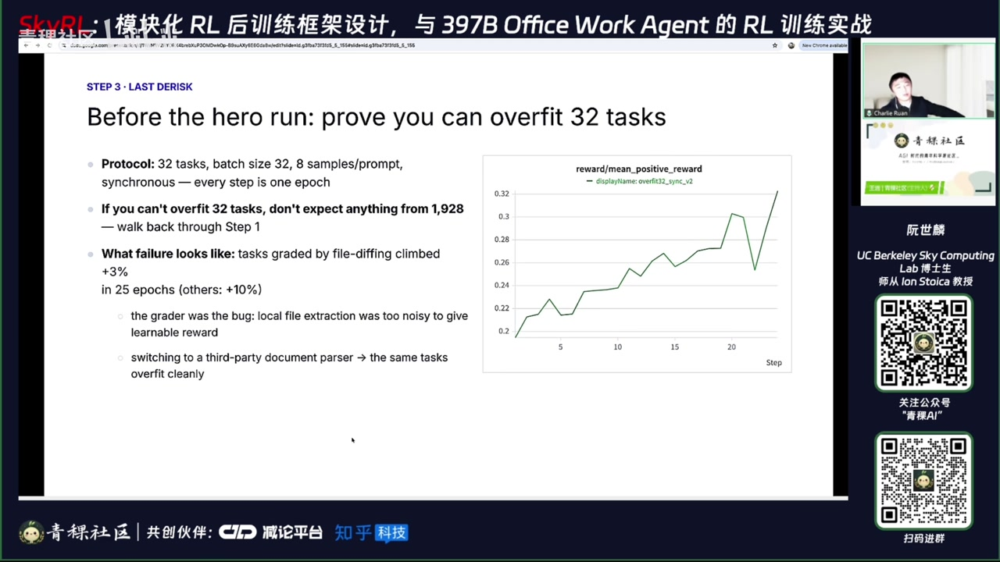
00:51:31阮世麟 · 主讲人对，所以这是一个比较简单的方式，用来快速check整个系统。通过这一步，我们可能发现某些task无法overfit。后来排查发现，这些task需要做file diff——比如agent修改了Excel sheet，因此需要用tool去做file diff，确认Excel是如何变化的；这类task就出现了overfit失败的问题。
00:52:11阮世麟 · 主讲人后来通过排查发现，是我们没有使用第三方的file diff parser。这个第三方parser fidelity更高、精度更高，而我们最初用的是本地的file extraction方法。这是一个比较繁琐的例子，但正通过这种overfit现象，你能抓到这类细节问题。OK，然后第四步是在35B模型上做了一些algorithm-level的ablation，由于时间关系，我们快速过一下：比如做了五个dimension的ablation。
00:52:59阮世麟 · 主讲人第一个是loss aggregation，一个是叫token-mean，一个是叫prompt-mean。token-mean的意思是：每个token贡献的gradient相同，这也是大部分RL框架默认的loss aggregation方式。prompt-mean则出自Double paper，强调每个prompt贡献的gradient相同。
00:53:29阮世麟 · 主讲人在within一个prompt内部，比如16个rollout中，每个token贡献的gradient相同。其直觉是：如果某个prompt特别长，其所有token的梯度加总就会dominate整个step的parameter update；而prompt-mean能保证每个task（即每个prompt）同等重要。实验结果是：token-mean训完一个epoch，prompt-mean训完一个epoch后，prompt-mean高了四个百分点。
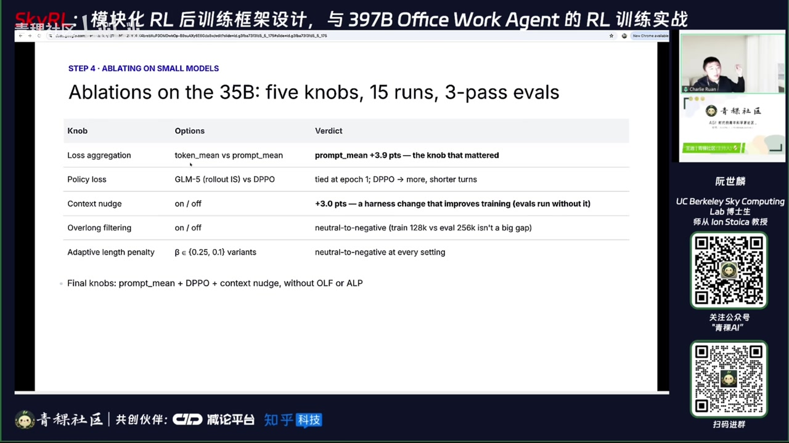
00:54:05阮世麟 · 主讲人对，在这个任务上，它给出的improvement最大，这是一个发现。另外一个是policy loss的operation-level ablation：在做training-inference match或off-policy correction时，有两种直接将correction引入loss的方式。一种是M5 paper里的，我们称之为rollout importance-weighted loss。
00:54:30阮世麟 · 主讲人然后另外一个是 DPO，是一个比较新的论文，它们两个都是想要去解决这个 training mismatch，直接在 rollout 里面去解决。这两个方法的训练结果是一样的。但 DPO 带来的效果是：agent 的 turn 次数更多，而每个 turn 的 reasoning token 更少。我们可能可以将这一点直接解读为更多的 exploration 和更 efficient 的 thinking。
00:55:06阮世麟 · 主讲人所以我们可能会更偏好 DPO 带来的结果。当然，这可能比较偏 heuristic 一点；但 more turns and shorter turns，可能最终确实在 evaluation 结果上带来更好一点的表现。还有一个叫 context nu，是因为我们在训练时可能是 128K 的 context length，而在 evaluation 时可能是 256K。所以存在 training 和 evaluation 的 context length mismatch。其中可以尝试解决的一个点是：在训练时，当 context 剩余还剩 20% 时，就去‘戳’一下模型，说‘快点结束’。
00:55:55阮世麟 · 主讲人这就只是在 to-response 阶段加上这么一个 signal。非常 surprising 的是，加上这一个 signal 之后，evaluation 提升了 3% 的百分点。在 evaluation 时，两个模型都未加 context nu，所以这个 evaluation 是 fair 的 comparison。因此，仅加上 context nu 就提升了 3 个百分点，可能可以解读为：加上 notch 之后，模型会更快地 rap up，从而避免因超出 context length 而被 penalized 或被 mask 掉。
00:56:37阮世麟 · 主讲人所以你的 data efficiency 就变得更高了一点。然后还有去做的是 overlong filtering 和 length penalty。overlong filtering 是指：如果输入超过了比如 128K 的 context，我应该给它 reward 0，还是直接把它 mask 掉、不让它影响 policy 的更新？我们下来的结果是，它可能没有太大的影响，甚至可能是偏负面的影响。
00:57:09阮世麟 · 主讲人所以我们最后还是用 reward 0 来 penalize 这个 context length 的 exceed。length penalty 是指：我是否需要根据模型 sample 的长度去给它一些 reward penalty？我们有尝试过 paper 上的 adapt length penalty，最后也发现它偏中性或偏负面。所以我们最后通过这一步的 solution，得到的 final set of knobs 就是：加上 DPO、加上 context nu，不用 overlong filtering，也不用 adapted length penalty。
00:57:54阮世麟 · 主讲人OK，然后第五步就是我们的 hero run，用了完全一样的 recipe。刚刚说的 context nu，这里我们用的是同样的 learning rate——我们没有太仔细地调 learning rate 或 optimizer；batch size 是 16，P 是 16，still less 大概是 3，context 是 160K，完全一模一样的 base model、一模一样的 setup。可能唯一不一样的是，第二步的 reward system 的 knob tuning 会不一样。
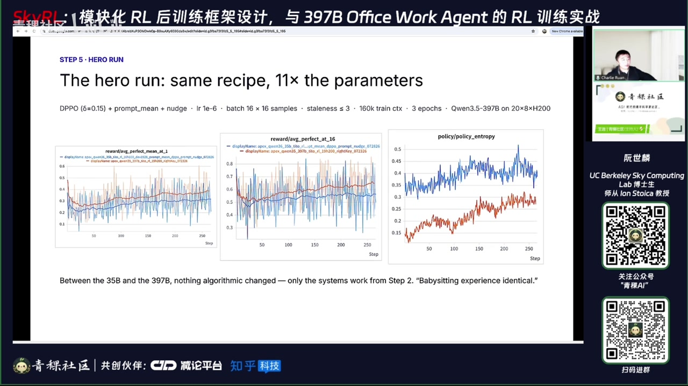
00:58:27阮世麟 · 主讲人这里用的是20个H200的node。图中PaaS one的curve：橙色的是397B，蓝色的是35B，p16和Entrop的曲线也都比较健康。最终结果是mean reward从28涨到了38；在小模型上，PaaS one从13涨到了24。下方是三个domain的breakdown：法律咨询、投行和consulting。35B在法律咨询上学到的更多，397B在consulting上学到的更多。最后是一些generalization的研究。
00:59:11阮世麟 · 主讲人最近大家经常在推特上讨论：你的RL训练是否被bake到了特定harness里？例如，如果我用PaaS one这个harness训练任务，模型可能学到的更多是该harness本身的特性；但若在deployment时换成另一个harness，其表现可能下降。因此我们好奇这是否真实存在。于是我们在PaaS one（即自己的harness）上完成训练后，在OpenCode——一个完全未见过的coding-based harness上做evaluation。
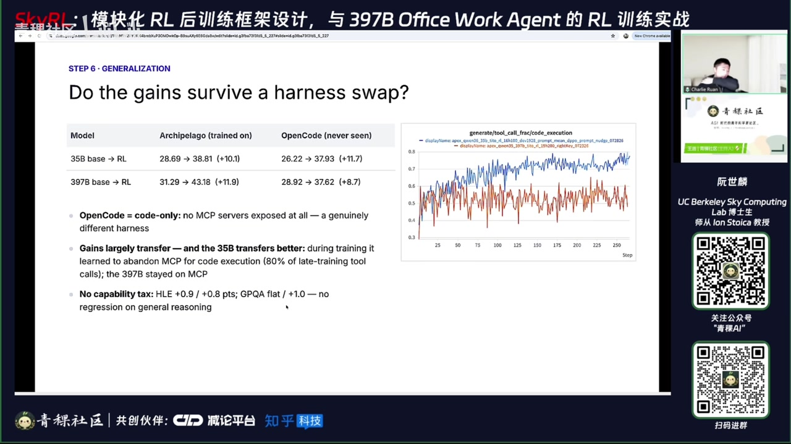
00:59:48阮世麟 · 主讲人结果发现35B模型的transfer效果特别好：在PaaS one上，base模型reward从28提升到38；迁移到OpenCode后，reward直接从26提升到37，基本实现完全transfer。而397B的transfer效果稍弱，从28提升到37。可能的原因可从图中看出：X轴是训练step，Y轴是模型在two中依赖coding的比例。
01:00:28阮世麟 · 主讲人蓝色曲线代表35B，起始值为3.6，可见训练过程中它越来越依赖coding。而397B则维持相对稳定的preference。这可能是35B迁移到OpenCode后transfer更好的原因。为什么35B更偏好coding？大概率因为它经历了更多AG（Agentic）后训练。最后我们也评估了它在Humanity Last Exam和GPQA上的表现，看是否存在degradation。
01:01:09阮世麟 · 主讲人结果发现这些指标持平。也就是说，经过两百多步训练后，模型的基础reasoning能力并未下降。整个playbook的目标是：当你已有数据、已有framework，或作为scale用户时，该如何使用它、如何训练你的任务。所有recipe已在report中开源；model weights和eval traces也已开源；同时配套有blog post，以文字形式复现本次分享内容，供你的coding agent在做2L时参考阅读。
01:01:48阮世麟 · 主讲人SC团队正在implement一个统一的proxy。此外，我们希望将整个recipe无痛地从你自己的U（user environment）迁移到managed backend上运行。Work团队则计划将该playbook扩展应用到更多off-the-shelf data set上，例如TerminalBench、SWE-bench等。OK，这就是本次talk的结尾。这里是Slack，有很多community成员，感兴趣的朋友可以扫码加入。
01:02:24阮世麟 · 主讲人然后这里是我的邮箱。好的，感谢世联博士的精彩分享。接下来进入到 Q&A 环节，您可以看一下聊天框中的一些问题。直播间如果还有想要提问的朋友，请抓紧时间继续提问。第一个问题：会不会被 record？我的理解是会。然后 R3 是不是有点像为了训练稳定性，把 ME 的模型硬往 dance 模型上靠，因为限制了训练时 token？并不是。训练时 token 分发仍是自由分发的。
01:03:08阮世麟 · 主讲人只是在 rollout 时，他仍是自由分发的；但在训练时会根据 rollout 时选择的动作去 pick。他的 router 也可以更新，不一定需要 freeze router 的权重。overfitting 震荡后上升，还是和文章一样相对直线上升？这个我可能也不太清楚，要具体看震荡幅度有多大。这里的 curve 也不是严格线性上升的，可能有些震荡，比如这里有个挺大的 drop，可能也是可以接受的。
01:03:51阮世麟 · 主讲人只有最终 zero-shot 奖励能 work 吗？确实这是个好问题，存在多种选择。对于 rubric-based 的问题，你可以做 pass-one 来做 reward：比如拿到 0.6 的 reward，可以直接设为 0，这样也是 ok 的；或者用 binary 的，或者用 float 的——我们这里用的是 float 的，即 0.6、0.8 等直接用于 GPO 的 advantage estimation。
01:04:27阮世麟 · 主讲人这个也可以作为 operation 长度越界 mask 吗？对，刚刚提到这里不 mask；做了 ablation 之后发现 mask 调整好像不是那么有帮助。我记得一些 report 里也提到不 mask，比如科的 compreport 就是直接拼，不 mask 掉，但科可能会用 length 信息。三个 test？对，这里三个 test 是一起去训练的。这也是一个可以稍作尝试的应用方向。
01:05:04阮世麟 · 主讲人这三个 domain：投行、咨询、还有法律。如果用某种 curriculum 去做，但其实这三个 domain 可能都差不太多，都是用这几个 MP server，都是做 office work，所以这里直接放在一起训练。多样化训练任务是如何设计的？有什么巧思吗？多样化训练——我不知道这是否和前面问题是同一类。它并没有什么巧思，就是直接丢在一块，randomly 训练。而且本身 task 数量也不多，巧思空间有限，一共就 2000 个 task。
01:05:53阮世麟 · 主讲人1300 个任务是怎么设计的？我不知道，一千可能说的是 1900 个。这里就是一个例子，可以参考 apex agents 这篇 paper，其中讲了 data size 是如何设计的。门库公司请了真正的投行家、咨询从业者等聚在一起，come up with 一个 case，并认真撰写该 case 所需的文档等材料；再基于该场景编出对应任务。
04｜Office Agent数据构建与评测方法
01:06:38阮世麟 · 主讲人例如：'Using the estimated market share... calculate the potential revenue'，并 'return your finding in a short message'——这就是他的任务。最后由专家撰写 rubric，比如是否算出 670K，或答案中是否包含某个 revenue gap 等细节，就是这么设计的。
01:07:08阮世麟 · 主讲人然后更多的例子有在这个APEX的paper里，这个paper里也讲了，比如说我的reward model怎么去update，比如他们最后用的是line 3，但他们会去评估哪一个reward model可能跟人的preference更加correlated。对，OK。啊，北数据的数据制作是怎么收集的？这里是直接去买这个数据的，他们是请人来构造的。但你也可以想象，比如去看Composer的paper的话，它有个东西叫Install。
01:07:49阮世麟 · 主讲人Auto-install。我不知道paper里有没有提，但在这个Sunsha的talk里，对，boowith auto-install，这是另外一种构造RL数据的方式。比如我去看我的数据的usage，去看它的trace，然后让一个agent根据这个trace去recreate我的environment。如果是coding的话，这个recreate process是什么呢？
01:08:23阮世麟 · 主讲人比如我会需要让我的agent去figure out：我需要在这个environment里面去装这个包，然后我要去compare这些内容。然后我的user的task是什么？这个user的task，让我这个auto-install的agent去figure out，我应该去写什么样的unit test。写完之后，你可能自己再去想一些质检的办法，那你就可以从user的usage直接convert成一个environment了。
01:08:51阮世麟 · 主讲人对，这应该是最ideal的方式。因为你最好的data，就是user的真实数据长什么样，你就应该怎么构造什么样的data。但可能科科是唯一一个好像真正做到这个事情的，或者至少是较public、可以明确说自己做到的公司。但大部分情况还是去找数据公司去买。买完之后，最多再synthetically augment一下数据；也有一些paper，比如R2E-GM，讲怎么去generalize environment。
01:09:30阮世麟 · 主讲人对，但可能开源并没有太多这种类型的environment。做R3的时候怎么控制expert stillness？怎么控制expert的behavior？这里我不知道我的理解对不对。但我们这里用的R3的index，是sample它的时候的index，也就是直接沿用app中sample时所用的action distribution——sample时用什么ac，我们就用什么ac来做R3。
01:10:27阮世麟 · 主讲人OK，我大概快过一过这个token。你token那里可以再仔细讲一下吗？我看你投到哪里了。对，哎，喝口水。那tokenization的话，首先每个模型有一个vocabulary，就是你的ro叫什么字典？即token 0、1、2、3分别代表的字符串是什么？同样的字符串，比如search，可以有不同的方式去tokenize它。
01:11:13阮世麟 · 主讲人比如这里可以tokenize成0、1、3，也可能被tokenize成2、3；tokenization是deterministic的，但同一字符串可有多种合法tokenization方式。比如我的skipline这个操作，模型skip两个line，你sample的时候是一个一个sample出来的，所以我需要记住模型sample出来的是什么。因为RL中，action是每个token，我需要用reward去reward或punish它实际take的action，而不是我以为它take的action。
01:11:54阮世麟 · 主讲人那这里他真正 take 的 action 是 013。具体解决方法：第一个解决方法就是，你大概的基本所有的 harness 都是用 check_completion 对吧？你的是 string in string out，即字符串 in、字符串 out。那你最笨的解决方法就是把这个 harness 直接改成用 completion 来写。你可以去看这个开源的代码，我把它直接用 completion 重新写了一遍，这可能也是最保险的一种方法。
01:12:34阮世麟 · 主讲人对。然后另外一种更聪明一点的方法，是在 rframework 里加一个 proxy：你的 check_completion 还是打到我的 proxy 里，但我帮你把它翻译成 completion。但光翻译不够，为什么？因为我需要知道你新进来的 response 应该怎么去 token 它。这个 PRiRL 的 2L framework 做了，SkyRL 也在做；感兴趣的话可以去看一眼，应该是 V1 的这么一篇 post。
01:13:17阮世麟 · 主讲人对，这个 specific 它有叫 interception server proxy。Anyway，这个大概是这样子。并这种抖 reward？哦，对，这是好问题。这个可以看门库的另外一个 blogpost：Apex Agents V1。其实我的这个 blogpost 发完之后发的 V1.1，它会有什么样的 reward hacking 呢？就是比如说我这里的 criteria 它是长这样的对吧？
01:13:59阮世麟 · 主讲人你会发现有时候这个模型会说——他在这个 blogpost 里叫 scatter gun（我不知道中文怎么译，大概就是‘扫射’的意思）——模型会说：‘如果是这样，那我会这么回答；如果是这样，我会这么回答；如果是这样，我会这么回答。’然后 Gemini 作为一个 judge model，对这种东西还是很 tolerant 的。所以只要你说的这些 scenarios 里有一个 match 上来，我就给你算对了。这是一种 reward hacking。
01:14:30阮世麟 · 主讲人然后在这个新的 Apex 第 1.1 版里，他就把这个给修掉了。就是在比如 criteria 里加了一个 constraint：它不能这么去 scatter。讲 train 这个 R 的过程，最小的局别三连是四张四卡；四卡看你想不想训 agentic 的话，最好还是 non-local，所以可能比如两张 inference、两张 training；训四笔应该是够的。这里我来找一下：这里有这么一个 fireworks，我经常会去这个配置上去看他们这个最小的要求是多少。
01:15:21阮世麟 · 主讲人比如说他的千万 3.6、35B，他这个 training shape，比如说我如果是训 LoRA 的话，我 4 个 B200 卡就够。所以当然他这个是 minimum，他可能就跑得很慢，但你能跑起来。对，但是 3.5B 的话——不是 3、30、35B 的话——可能最好还是比如四个 node，就是比如 32 卡的 H200 是比较理想的。对于这种比如说 200K 的 context 的任务。stiffness 值小于等于 3 吗？有没有相关 trace？哦，这个其实没有，这个没有做 operation limitation；但是看这个小米直播，好像他们不会超过 1，好像还是不会超过 2。
01:16:06阮世麟 · 主讲人对，但我们这里做的是三就呀，每个 student 不会超过 2。感觉大家一般二、三是比较 default 的选择。这个跟 VLLM 比最大的优势是啥？SkyRL 可能跟 VLLM 比，写 SkyRL 的时候肯定借鉴了很多 VLLM，可能优势是相对更模块化一些，更轻量一些；接入自己的 harness 可能会更方便，整体代码会更少一点；还有就是 Tinker 的兼容性。我不太清楚国内对 Tinker 的采用情况是怎样的。
01:16:54阮世麟 · 主讲人但是在美国，比如 Fireworks、BaseTime 这些原本做 inference 的公司，也会想去做 training。所以你就需要希望你的 RL 实验都往一个 API 上面去标准化。所以主要是可能更模块化一点，API 更标准化一点；32 个 task 快速验证，是看训练集 reward 上升吗？还是看验证集呢？哦，这里是看训练集。
01:17:26阮世麟 · 主讲人你也可以看验证集，但如果训练集 reward 都上升不了，那问题就比较大了。所以我们这里只看了训练集。三个一起训需要什么额外代价吗？这里并没有太多额外代价，其实这三个任务之间差异没有那么大；但确实可以 update 一下，改成三个分开来训。有什么可以去做的事情？比如 20 或者 JADE 呢？长城任务有压缩后训的方式吗？这个 recipe 上没有做，但在 LLM 里你可以做 compression，比如 comp 完之后就相当于当两个 sequence 去训，但用的是同一个 reward 去做 policy 优化。
01:18:12阮世麟 · 主讲人这个的训练环境是怎么生成的？30 个是在训练环境里的一个子集，训练环境在这里是 Marmy 的环境。但刚刚应该有回答，就是有不同的方式可以构建训练环境。投行态就是 A 派做，对的，就是可能去跑这个叫什么 DCF model，或者是 whatever 这种投行的一些 task。A 股投行在做 Chinese iBench 和境外的完全不一样，我比较好奇，我也不知道它长什么样。
01:18:52阮世麟 · 主讲人对，但 Apex Agent 在 Hugging Face 上可以看到，你可以去看这个 agent 是长什么样的。它在 Hugging Face 上有没有对比？直接用 1.9K？确实老板之前有做过 3.6B 的 dance model，这个 3.6B 还是 3.5B 的 dance model 做 SFT，看你的目标是什么。如果你是想直接训小模型，并没有想去 push 这个 scale，而是想去降低成本的话，可能确实做 SFT 会更好。
01:19:33阮世麟 · 主讲人但是这里我们并没有去做这个对比：一个是做 SFT 去增大模型，另外一个是自己做 RL。对于普通颗粒组复现 A 派数据的合成方式，你觉得难点在哪里？复现，确实这是一个挺好玩的方向。就是你根据 public data，怎么让比较厉害的模型去 synthetic 地 generate 这个 task。我没有太想过，但感觉应该是一个挺有价值的方向。可能我不知道去网上找这种投行的 case study。
01:20:12阮世麟 · 主讲人比如我不知道去找什么 Harvard Business School 的 case，或者什么的，然后让模型根据这个 case 作为一个 seed，再根据这个作为模板去生成一个 task。但可能难点会在于你怎么证明你这个 environment 的质量是高的。这个感觉一直都是质检比较难的一个地方。当然最简单的、最直观的方式是你在这上面训一下，但当然这就比较贵。我听过的一些质检方式是，比如你造出来的 task，让 Haiku、Sonnet、Opus 三个都跑一遍。
01:20:54阮世麟 · 主讲人比如说你应该会预期海库最烂、OP最好，然后你去看你的造出来的数据上，是不是存在这么一个相关性。如果不是——比如在你的数据上，海库跑得最好——那你的数据大概率是有问题的。就有这种比较‘笨’的办法来质检数据。但我觉得合成型数据比较难的地方，是怎么证明其质量对over初始比较低。这里确实是直接randomly sample的；你也可以通过reward variance去sample，或者挑难一点、简单一点的样本去sample，但本实验中是直接randomly sample的。
01:21:40阮世麟 · 主讲人训练Office的出发点是：为什么不直接选对？嗯……这取决于你是谁。如果你是模型厂商，比如迅模型的公司，你可能就需要打榜。我听到的一般结论是：你想打什么榜，就需要训什么任务——你吃进去什么，吐出来就是什么。所以为了打GDP-well这类榜，你就需要训Office类任务；而如果直接训coding或terminal，可能在GDP-well上表现不一定好。
01:22:17阮世麟 · 主讲人这是模型厂商的出发点。如果是企业端出发点，比如你是一家投行，那你每天的真实任务就长这个样子，那你就在这个任务分布上训——越indom越好、越basic越好。相比直接用SFT用21训练，RL的优势在哪里？比如如果你是用最强的模型去训，那就nothing to distill from，即没有更强的模型可供蒸馏。
01:23:00阮世麟 · 主讲人所以21可以去push这个frontier；但如果你问的是RFT——即你自己生成轨迹、自己挑选正确轨迹去做SFT——这个trade-off我其实不太清楚。但目前RL的recipe更多一些；而RFT的recipe好像并没有看到太多。在训练中，有没有模型一直做不对的困难能力？有没有做特殊处理？
01:23:38阮世麟 · 主讲人这个case study上并没有做特殊处理。但确实可以去做loss analysis，看模型为什么fail；然后要么tune prompt，或者改harness，或者retrain之类的。但本case study中并未做这些。好的，好像问题都过完了。感谢世林博士的精彩解答，目前应该没有新问题了。Ok，好吧，又有了一个新问题。直播间如果还有想提问的朋友，请抓紧时间，我们最多再留五分钟。
01:24:23阮世麟 · 主讲人Agent和普通调参的经验区别：这里的调参经验主要就集中在这些方面；但和math等任务的区别，我想想……可能off-policy fully会更重要一点。因为做math时，格（gap）没有那么严重，所以在off-policy correction上可能需要多花心思。系统层面的调参也可能更不一样，比如你的k值一开始可能占比较大，这是需要重点考虑的。
01:25:12阮世麟 · 主讲人刚入门有没有基础课？刚入门训练框架的基础课，我不知道是否有专门课程；但有一个RHF book感觉挺好，不过它可能偏21、偏算法一点。如果是21框架的课，我其实不太知道有没有什么推荐。但如果是general的训练课程，我在硕士阶段是在天奇组里干的，他有一门课在CMU——对，这门课非常非常好，非常非常推荐。它basically就是重新手搓一个小PyTorch；所有课程录像都是开源的，所有assignment也是开源的。
01:26:03阮世麟 · 主讲人这个课当时给我很多帮助。对不同子集 overfit 提升曲线差异比较大的话，虽然都上升，需要怎么调整时间？训练时调整训练数据的配比。这个没有太做调层，最后就是一股脑用1900个 random sample 去训的，对这个没有做太认真。比如说这个 baseline。最关键的技术难点是哪一页？难点有哪几点？这里可能更多是一个小手册，你需要做哪些东西？
01:26:50阮世麟 · 主讲人说难其实都不难，但就是哪个比较繁琐。在这里的话，可能第一步最繁琐一点，就是你怎么保证这个21的质量是对的。比如说你如果真的在一个 LA 里去做 R1 的话，我猜你应该会有很多人去天天看你的 trace：你的 trace 有没有 reward？你的 trace 有没有暴露 environment 的问题？这可能是最繁琐、比较讨厌的一点。然后别的 operation 相对可能好一点。
01:27:28阮世麟 · 主讲人对。为什么选了这个 agent 没有选择派？确实，这是个好问题。这个更多是因为 MER 扩的这个榜——这个 Apex Agent Leaderboard 更多是用 Apex、用 Archipelago 这个 harness 跑的。所以确实，一般的话，可能用 OpenCode 这种 general 的 harness 会比较好一点。但同时，比如看小米的 run，它会用20个 harness 去训。所以也看你的目的吧。
01:28:07阮世麟 · 主讲人但如果你是企业的话，可能确实用一个比较常见的、你在 deploy 的时候真的去用的 harness 来跑，会最合适。